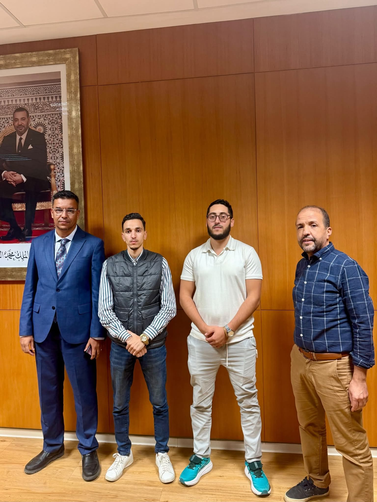

أكادير: توقيع محضر اجتماع بين إدارة المجموعة الصحية الترابية سوس ماسة والتنسيق النقابي الجامعي بعد أزيد من ست ساعات من الحوار

إخبار لعموم الشغيلة الصحية بالمستشفيات الجامعية وعموم الرأي العام المهتم بالشأن الصحي المحلي والجهوي والوطني:
بدعوة من إدارة المجموعة الصحية الترابية سوس ماسة، انعقد يوم الإثنين 9 نونبر 2026 لقاء مع مسؤولي الإدارة العامة بحضور مدراء المستشفيات الجامعية، ودام الاجتماع لأزيد من ست ساعات من النقاش المسؤول والمستفيض، خُصص للتداول في مختلف الملفات المطلبية والقضايا المهنية والإدارية المطروحة على مستوى المؤسسات الاستشفائية الجامعية داخل المجموعة.
وقد استحضر التنسيق النقابي الجامعي، الذي يجمع النقابة المستقلة للممرضين وتقنيي الصحة والنقابة المستقلة للأطر الإدارية والتقنية ومساعدي الصحة، جملة من الاختلالات والإشكالات، ووضع على طاولة الحوار ملفاً مطلبياً يشمل هموم جموع الأطر الصحية بجميع المستشفيات الجامعية، مؤكداً أن تدبير المرحلة يقتضي الإنصات الجاد والمسؤول والوضوح في المواقف وتحمل المسؤولية في اتخاذ القرارات لنزع فتيل الاحتقان وترسيخ السلم الاجتماعي.
وتُوّج اللقاء بتوقيع محضر اجتماع بين المسؤولين والتنسيق النقابي الجامعي تضمّن عدداً من الالتزامات المرتبطة بالملفات موضوع النقاش، في انتظار بلاغ تفصيلي سيصدر يوم غد يتضمن مختلف الملفات التي نوقشت والالتزامات المتفق عليها، كما سيحدد مصير البرنامج النضالي الذي سبق إقراره، بما في ذلك المقاطعة والاعتصام الجزئي، وتاريخ الجلسة الثانية من الحوار التي تعهدت بها الإدارة.
ونثمّن مبادرة اليد الممدودة والانفتاح على التنسيق النقابي الجامعي، في أفق عقد جلسة حوار ثانية وتنزيل نقاط المحضر الذي توج به الاجتماع، شريطة أن يُحدث هذا الحوار التغيير ويستجيب لأماني وانتظارات الشغيلة الصحية.
فتح في تطبيق النقابة